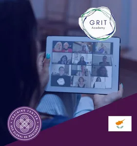
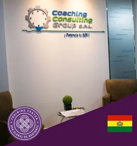
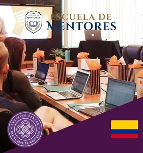
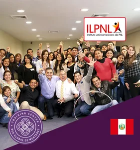
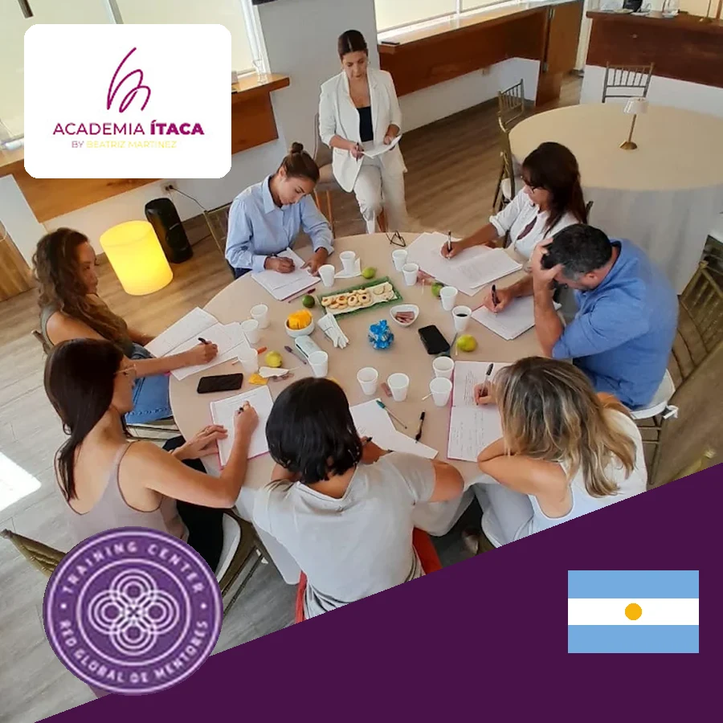
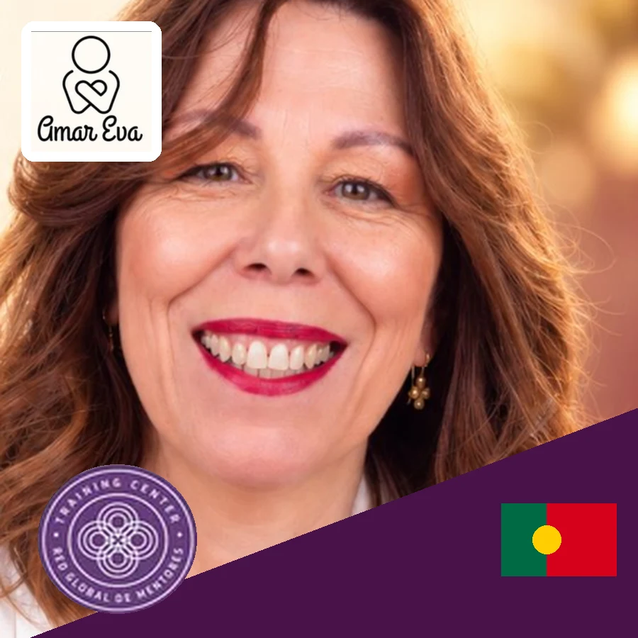

English Mentoring Academy
Londres, Reino Unido · lengua inglesa
Es la entidad responsable de la construcción doctrinal, académica y estratégica de la disciplina. Hoy hay más de 15 Centros de Formación certificados en 13 países, en tres lenguas (español, portugués e inglés).
Entidades autorizadas por la Academia Global RGM para desarrollar, representar y expandir la mentoría en un idioma determinado. Su misión es impulsar la formación, certificación, investigación y profesionalización de la mentoría, adaptando los estándares internacionales a la realidad cultural y educativa de cada territorio. Actúan como nexo entre la Academia Global RGM, las universidades, los centros de formación y los mentores de su región.
Londres, Reino Unido · lengua inglesa

Madrid, España · lengua española

Lisboa, Portugal · lengua portuguesa
Instituciones de educación superior que incorporan la mentoría en su oferta, impartiendo programas oficiales desarrollados o avalados por la Academia Global RGM, mediante asignaturas, especializaciones, diplomaturas, maestrías y programas de formación académica, con rigor científico, calidad educativa y reconocimiento institucional.


Instituciones educativas que integran la mentoría dentro de sus propios programas formativos, combinándola con otras disciplinas, metodologías o áreas de especialización. Su función es difundir, enseñar y aplicar la mentoría en distintos contextos, mediante programas mixtos avalados por la Academia Global RGM.












Los Mentores Docentes Certificados son los profesionales habilitados para ejercer la mentoría conforme a los estándares académicos, éticos y metodológicos de la Academia Global RGM. Constituyen la expresión práctica de todo el ecosistema, ya que son quienes transfieren experiencia, criterio y sabiduría aplicada a personas, equipos, organizaciones y comunidades.
Centros de Formación bajo un formato de franquicias que les permite dictar formaciones con los programas de la Academia RGM y luego otorgar certificaciones internacionales.